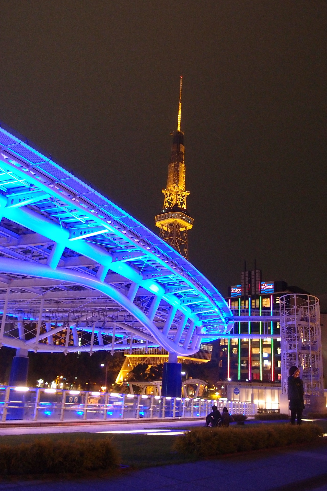
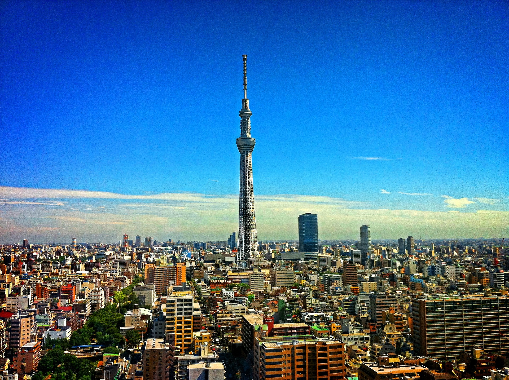
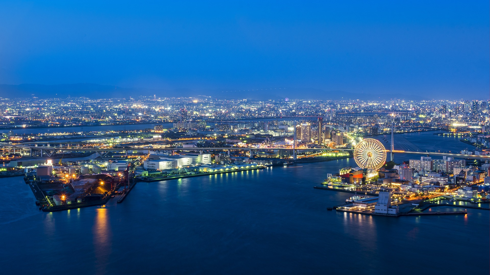

일본관광정보 안내
안녕하세요. 일본관광정보를 안내드립니다.
목차
1. 나고야
2. 도쿄
3. 후쿠오카시
나고야

일본 주부 지방의 도시. 아이치현의 최대 도시이자 일본에서 4번째로 인구가 많은 대도시로[4] 중경(中京:주쿄)이라고도 하는데 에도 시대의 3도(三都) 중 에도가 위치한 간토와 교토, 오사카가 위치한 간사이의 중간이라는 뜻에서 유래했다. 주쿄권(중경권, 中京圏)은 나고야를 중심으로 한 도시권을, 주쿄 지방(中京地方)은 도카이 3현(아이치현, 기후현, 미에현)의 전부 혹은 일부를 의미한다. 주부 지방의 교통 중심지이며, 16개의 구로 이루어져 있다.
인구는 2017년 10월 기준 231만여 명이고, 정령지정도시[5]로 처음 지정된 5개 시[6] 중 하나다. 아이치현의 현청소재지이다. 현재 시장은 2012년 난징 대학살을 공개 부정한 것으로 유명해진 감세일본당의 카와무라 타카시(河村たかし)이다.[7][8]
한자 뜻으로 해석하면 이름의 뜻을 종잡을 수 없는 도시이다. 名古屋을 한자 뜻으로 굳이 해석하면 ‘이름난 오래된 집’ 정도가 될 텐데, 이렇게 해도 왜 名은 훈독이고 古는 음독인지가 미스터리로 남는다. 나고야라는 지명은 유래가 불명확하나, 일단 고유어 지명이라는 게 중론. 역사적으로 음은 똑같이 なごや지만 名護屋[9], 那古屋, 名古屋 등 다양하게 표기되다가 名古屋으로 굳어졌다. 보통 접두어나 약칭으로 써야 할 경우 名만 따로 떼서 음독한다. (ex. 메이테츠, 메-테레)
일본에서 무려 3대 대도시로 꼽힐 정도로 큰 도시이지만 관광지로써의 존재감이 매우 약하다. 후쿠오카나 교토, 삿포로의 존재감이 더 강할 정도. 유명 일본 예능에서 일본의 3대 대도시에 관해 일본인들에게 물어봤더니 도쿄, 오사카, 교토, 후쿠오카 등 여러 지명들이 나왔지만 나고야는 언급되지 않았다. 신칸센 노조미 개통 당시 정차역에서 나고야를 무시했다. 당연히 일반화할건 아닌게, 다른 모 퀴즈버라이어티에서 한 '일본의 제3도시는 어디인가?'라는 설문조사에서는 나고야가 제일 많은 대답을 얻었다. 한 인터넷 사이트의 조사에서는 약 반수에 가까운 사람들이 일본 제3의 도시로 나고야를 선택했다. 이 조사에서는 39개 도도부현에서 나고야가 1위를 차지했다.
다만 ANN 뉴스 설문조사에 따르면, 일본 주요 8개 도시 중 '쇼핑이나 놀러가고 싶은 도시는 어디인가?', '도시에 대한 애착감이 있는가?' 등의 질문에서 최하위권을 기록했다. 반면, '가장 매력이 딸리는 도시는?'에서는 압도적인 1위이다. 영상 링크. 정작 나고야 토박이는 애향심이 강한 편인데, '우리끼리' 문화도 있지만 일본 내국인 한정으로는 살기 좋기 때문이다. 나고야에 오래 산 한국 사람의 이야기에 따르면 도쿄나 오사카에 비해 적당히 한적한데 나름대로 일본 내에서 손가락 안에 드는 도시이다보니 있을 시설은 다 있어서 살기 좋다고 한다. 다만 나고야 거주 한국인들에게 지인들이 나고야 놀러 간다고 하면 볼거 없으니 오지 말라고 하는 경우가 많다. 관광지로 매력이 없기 때문이다.
도쿄

도쿄도[11](東とう京きょう都と, Tōkyō-to)[12]는 일본의 수도이다. 혼슈 동부에 있는 도쿄 광역권의 핵심 도시이자 일본의 중심지이다.
도쿄도만 놓고 보면 인구는 약 1400만 명이며, 이 중 구(舊) 도쿄시 지역인 23개 특별구의 인구는 약 970만 명이다.[13] 도쿄를 중심으로 일본 수도권이 형성되어 있으며, 수도권까지 포함하면 산출 기준에 따라 2020년대 기준 약 4350만 명까지 올라간다.[14] 도쿄를 중심으로 한 일본의 수도권은 세계 최대의 교통 인프라를 형성하고 있고, 세계에서 다국적 대기업의 본사가 가장 많은 도시이기도 하다. 또한 도쿄는 뉴욕, 런던과 함께 세계 3대 도시로 불리기도 한다.[15][16]
먼 과거에는 무사시노쿠니의 도시마군(豊島郡)이었지만, 11세기 헤이안 시대 후반부터 에도(江戸)라고 불렸다. 전국 시대까지는 작은 해안 마을이었으나 도쿠가와 이에야스가 에도 막부를 세우게 되었고, 간척과 함께 도시를 세우고 상업을 발전시키면서 일본의 핵심 도시가 되었다. 당대에는 계속 에도라는 이름으로 불렸다. 1868년 에도를 일컬어 도쿄라 한다는 조서(江戶ヲ稱シテ東京ト爲スノ詔書)를 내려 현재의 이름으로 바꾸었다.
후쿠오카시

일본 후쿠오카현 중서부에 위치한 시. 후쿠오카현청 소재지이자 후쿠오카현, 더 나아가 규슈의 최대도시이다. 대한민국 (경상도)과 220km 거리로 지리상 가장 가까운 일본의 대도시다. 인구는 163만 명으로 일본 전체 6위.[3][4] 후쿠오카시 경계선 밖으로도 주변의 여러 시군[5]과 시가지가 쭉 이어져있어 실제 도시권 인구는 좁게 잡아도 200만을 훨씬 넘는다. 한국의 부산광역시와는 1988년에 자매결연을 맺은 도시이기도 하다.
도시의 전반적인 분위기가 타 일본 대도시보다 외국인에 대해 개방적인 것이 특징이다. 한국, 중국과 지리적으로 가깝고 옛날부터 교류가 있던 탓에 관동지방이나 타 지방 사람들에 비해 외국인에게 개방적이다.[6]
볼것이 시가지[7]에 몰린 편이 아닌지라 후쿠오카시 지하철 1일 패스나 니시테츠 그린패스(1일 버스패스) 하나 사서 다니면 충분히 시내 관광이 가능하다. 물론 일본 특성상 지하철, 버스 간 환승 따위는 기대 하지 않는 게 좋으므로 방문장소에 따라 버스냐 지하철이냐를 잘 선택할 것. '후쿠오카 투어리스트 패스' 라는 것이 있는데 여권이 있으면 구입할 수 있고 앞서 기술된 패스보다 200엔 비싸지만 버스와 지하철 모두를 이용할 수 있다.